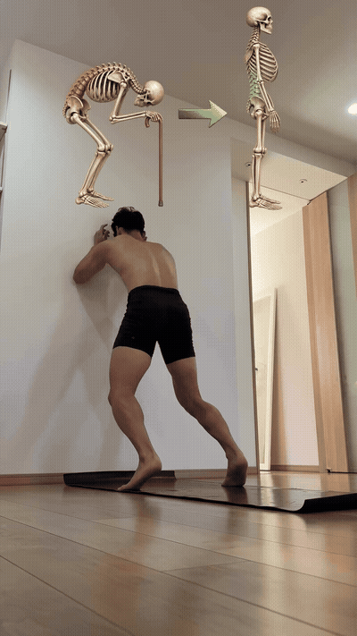
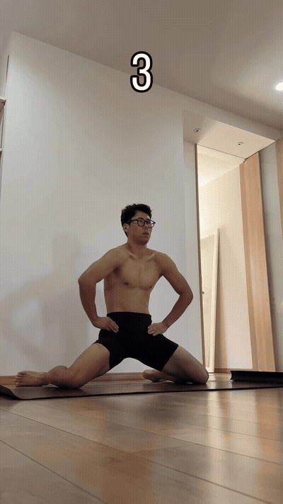
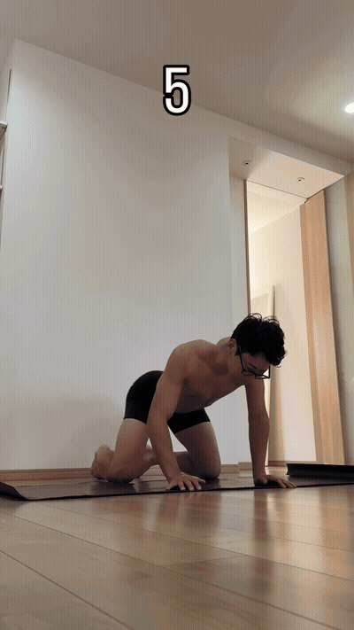
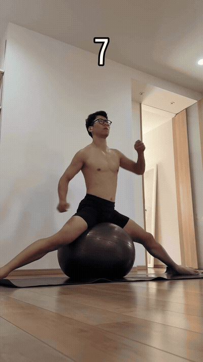
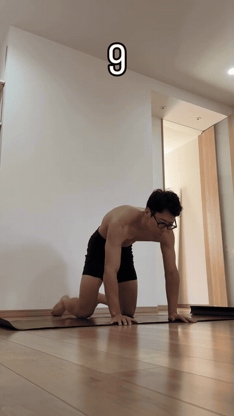
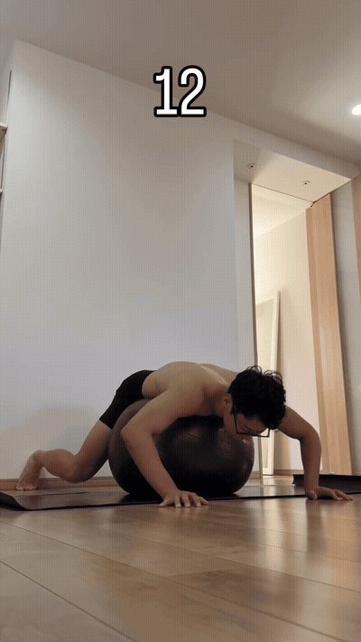

Use two low stools or stable supports to regress the forward fold and explore the posterior chain without forcing the low back.

From all fours, articulate the spine through a controlled wave. The source emphasizes segmental movement rather than speed.

Rock gently in quadruped as the flow transitions from spinal work toward the adductor opening.

Widen the knees and use the hands for support to explore the inner-thigh and groin range.

Lie on the back and move the elevated legs dynamically as shown, combining lower-core engagement with hip-flexor motion.

Finish standing with a dynamic torso rotation and overhead reach. Keep the motion relaxed and coordinated.